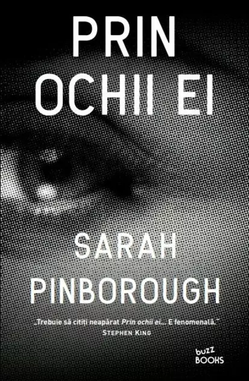

Știați că...
În Bangladesh există o lege care permite autorităţilor să aresteze elevii cu vârste mai mari de 15 ani care copiază la examene?
În Bangladesh există o lege care permite autorităţilor să aresteze elevii cu vârste mai mari de 15 ani care copiază la examene?
O gâscă într-un bar: - Aveți mămăligă? Întreabă gâsca. - Nu, răspunde barmanul. - Sigur? - Nu, nu avem, n-auzi? - Sigur, sigur ? - Dacă mai întrebi o dată, iau un cui și un ciocan și-ți prind ciocul de tejghea. - Aveți cuie? - Nu! - Dar mămăligă?

Louise este o mamă singură, secretară, prinsă în rutina de zi cu zi.
Într-una din serile ei în oraș, întâlnește un bărbat într-un bar și imediat ies scântei.
Deși pleacă după ce se sărută, e încântată că în cele din urmă a creat o legătură cu cineva.
Când ajunge la serviciu luni, Louise... îl întâlnește pe noul ei șef, David, bărbatul de la bar.
Bărbatul căsătorit de la bar, care îi spune că sărutul a fost o greșeală teribilă, dar încă nu-și poate lua ochii de la ea.
Apoi Louise se ciocnește de Adele, care este nouă în oraș și are nevoie de o prietenă.
Dar se întamplă că tocmai ea să fie căsătorită cu David.
Prin ochii ei este o poveste inedită și care, probabil,
nu seamănă cu nici o altă carte pe care ați citit‑o până acum.
Vin oaspeții la tine, iar în frigider ai o sticlă de vin, o sticlă cu suc și o sticlă cu apă minerală. Ce vei deschide mai întâi? Frigiderul